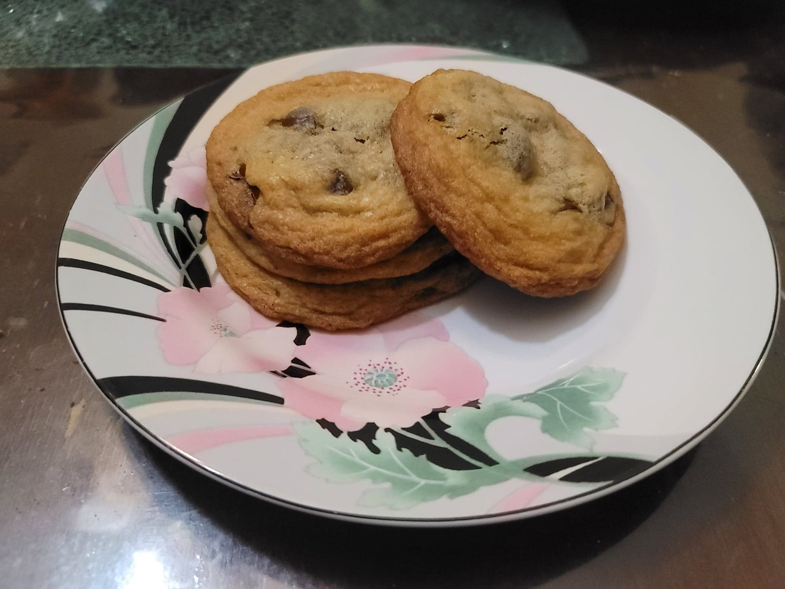

Chocolate Chip Cookies

Ingredients:
- 1 cup Butter, softened
- 200 g Sugar
- 220 g Light brown sugar
- 2 tsp Vanilla extract
- 2 large Eggs
- 360 g Flour
- 1 tsp Baking soda
- 1/2 tsp Baking powder
- 1 tsp Fine sea salt, or to taste
- 350g Chocolate chips
Instructions:
- Preheat the oven to 375 degrees Fahrenheit. Line a two baking sheets with parchment paper.
- In a large mixing bowl, cream together the butter, sugar, and light brown sugar with an electric hand mixer. Then cream in the eggs and vanilla extract.
- In a separate bowl combine the flour, baking soda, baking powder, and salt with a whisk. Then fold in the dry ingredients to the wet ingredients with a rubber spatula. Mix the ingredients until completely homogenous. Then gently fold in the chocolate chips.
- Form the cookie dough into balls about 2-3 tablespoons each and place onto the baking sheet. Place only about 6 cookies, evenly spaced, per sheet in order to not have them touch after baking. Bake for 8-10 minutes, or until just barely starting to brown on the edges. Then let the cookies rest in the pan for at least 2 minutes before removing. Repeat until all the dough is finished. Serve warm or room temperature with milk.